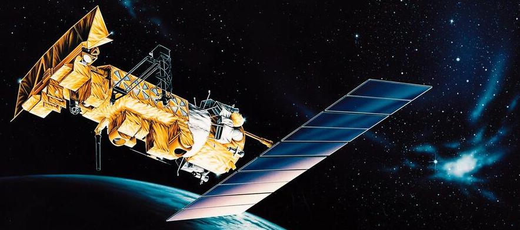
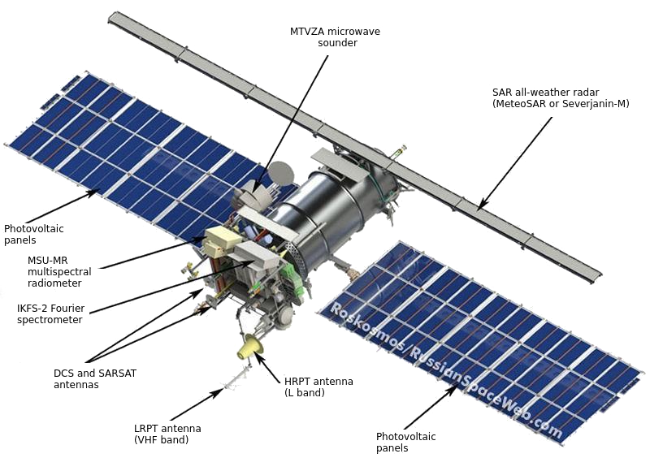
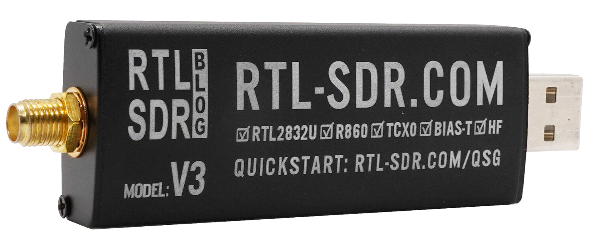
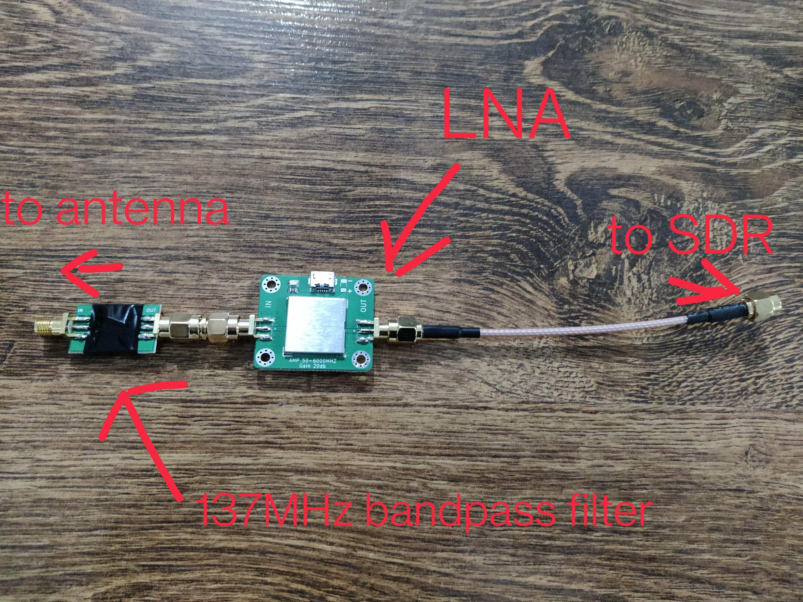
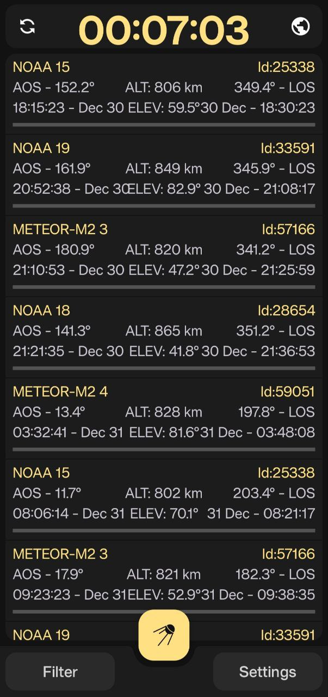

In the last year or so, I really took an interest in receiving weather satellite data and imagery from a series of satellites that broadcast this information freely.
I knew about software defined radio, but didn't expect you could receive images from satellites directly using ~$30 of hardware!
For a start, in this post I'll talk about the NOAA-POES and METEOR-M series of satellites, the ones which I successfully received imagery from.
The NOAA POES series of satellites are the easiest to receive among all other weather satellites. Their analogue, robust and powerful signal is easy to receive and "forgives" small errors or interference.

The POES (Polar Operational Environmental Satellites) satellites are a series of sun-synchronous, polar-orbiting satellites that orbit the Earth at around 800 km above the ground. Their orbit is chosen so they pass over the same ground location at roughly the same solar time each day, twice per day.Three satellites are currently operating: NOAA 15, NOAA 18 and NOAA 19.
There is also the METEOR-M series of satellites, which allow you to receive excellent images with very little effort.
The METEOR satellites are a series of sun-synchronous, polar-orbiting satellites that orbit the Earth at around 800 km above the ground. Their orbit is chosen so they pass over the same ground location at roughly the same solar time each day, twice per day. Two satellites are currently operational in the LRPT mode: METEOR-M N°2-3 and N°2-4

The major difference between the 2 series of satellites besides the frequencies is that NOAA POES satellites transmit their signal modulated as APT (Automatic Picture Transmission), which in itself is analog, while the signal for the METEOR-M series is digital, called LRPT (Low Rate Picture Transmission).
Here is a list of frequencies for the satellites mentioned above.
| Satellite | Frequency | Mode | Bandwidth | Polarisation |
|---|---|---|---|---|
| NOAA 15 | 137.62 MHz | FM | 50 kHz | RHCP |
| NOAA 18 | 137.9125 MHz | FM | 50 kHz | RHCP |
| NOAA 19 | 137.1 MHz | FM | 50 kHz | RHCP |
| METEOR-M N°2-3 | 137.9 MHz | OQPSK 72k | 100 kHz | RHCP |
| METEOR-M N°2-4 | 137.9 MHz | OQPSK 72k | 100 kHz | RHCP |
(check out the dipole length calculator from the amateur radio post)
To receive data from such satellites, there is some needed hardware. The receiving hardware is called Software Defined Radio (SDR). I used the RTL-SDR V3

An antenna is also necessary, as we are working with radio signals. I used the dipole antenna from the RTL-SDR V3 kit. Custom dipole antennas can be made, just make sure to use the proper length for the dipole legs and an 120 degree angle between the dipole legs.
Here are some examples:
An LNA (Low Noise Amplifier) is optional, because the signal from the satellites is pretty strong and there is line of sight (LOS) between us and the satellite. I used a LNA and a bandpass filter (only lets signals at a specific range pass through) for 137MHz (actually it is a frequency range 137MHz - ~138MHz) to increase the received signal quality.
Here is the LNA+bandpass filter used:

For the software side of things, I used SDR++ for recording, because it is cross-platform and recommended by other enthusiasts, and SatDump for processing the signal. (give them a star on GitHub please!)
As I mentioned, these satellites have a sun-synchronous polar orbit, meaning they pass the same spot on Earth twice a day, scanning the Earth from north to south or vice-versa.
So it is possible to predict when the satellite is going to be overhead, thus being possible to receive its transmission.
I prefer to use my phone to see the predictions, so I use Look4Sat.

Here are some images received by me and my friends (along with a cool clip)